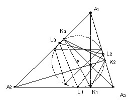
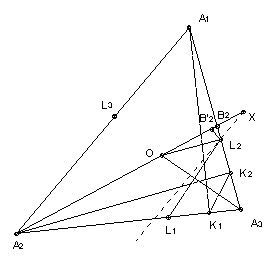
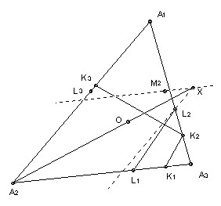

A1A2A3 is an acute-angled triangle. The foot of the altitude from Ai is Ki and the incircle touches the side opposite Ai at Li. The line K1K2 is reflected in the line L1L2. Similarly, the line K2K3 is reflected in L2L3 and K3K1 is reflected in L3L1. Show that the three new lines form a triangle with vertices on the incircle.

Solution

Let O be the centre of the incircle. Let the line parallel to A1A2 through L2 meet the line A2O at X. We will show that X is the reflection of K2 in L2L3. Let A1A3 meet the line A2O at B2. Now A2K2 is perpendicular to K2B2 and OL2 is perpendicular to L2B2, so A2K2B2 and OL2B2 are similar. Hence K2L2/L2B2 = A2O/OB2. But OA3 is the angle bisector in the triangle A2A3B2, so A2O/OB2 = A2A3/B2A3.
Take B'2 on the line A2O such that L2B2 = L2B'2 (B'2 is distinct from B2 unless L2B2 is perpendicular to the line). Then angle L2B'2X = angle A3B2A2. Also, since L2X is parallel to A2A1, angle L2XB'2 = angle A3A2B2. So the triangles L2XB'2 and A3A2B2 are similar. Hence A2A3/B2A3 = XL2/B2'L2 = XL2/B2L2 (since B'2L2 = B2L2).
Thus we have shown that K2L2/L2B2 = XL2/B2L2 and hence that K2L2 = XL2. L2X is parallel to A2A1 so angle A2A1A3 = angle A1L2X = angle L2XK2 + angle L2K2X = 2 angle L2XK2 (isosceles). So angle L2XK2 = 1/2 angle A2A1A3 = angle A2A1O. L2X and A2A1 are parallel, so K2X and OA1 are parallel. But OA1 is perpendicular to L2L3, so K2X is also perpendicular to L2L3 and hence X is the reflection of K2 in L2L3.

Now the angle K3K2A1 = angle A1A2A3, because it is 90o - angle K3K2A2 = 90o - angle K3A3A2 (A2A3K2K3 is cyclic with A2A3 a diameter) = angle A1A2A3. So the reflection of K2K3 in L2L3 is a line through X making an angle A1A2A3 with L2X, in other words, it is the line through X parallel to A2A3.
Let Mi be the reflection of Li in AiO. The angle M2XL2 = 2 angle OXL2 = 2 angle A1A2O (since A1A2 is parallel to L2X) = angle A1A2A3, which is the angle betwee L2X and A2A3. So M2X is parallel to A2A3, in other words, M2 lies on the reflection of K2K3 in L2L3.
If follows similarly that M3 lies on the reflection. Similarly, the line M1M3 is the reflection of K1K3 in L1L3, and the line M1M2 is the reflection of K1K2 in L1L2 and hence the triangle formed by the intersections of the three reflections is just M1M2M3.

© John Scholes
jscholes@kalva.demon.co.uk
30 Aug 2000
Last corrected/updated 18 Oct 2002